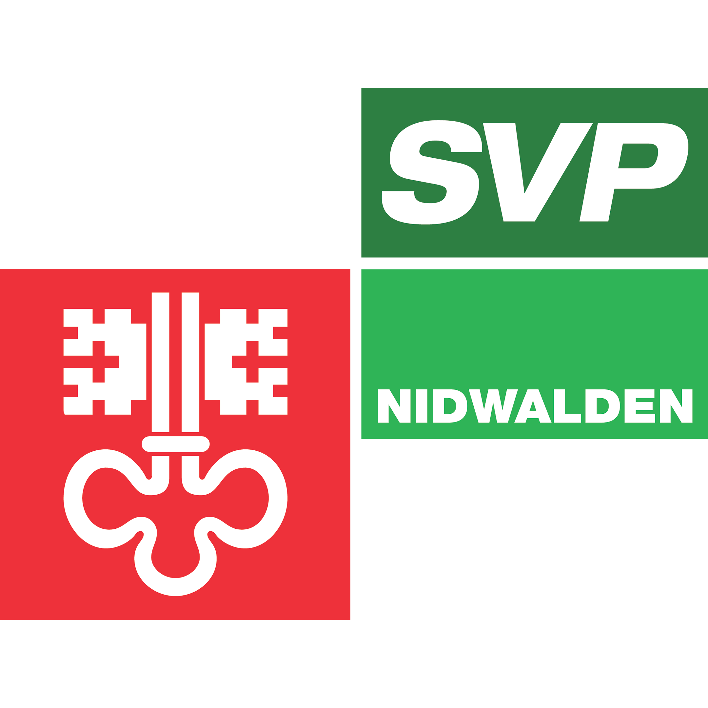

DANIEL MEISTER

Geboren am 7. Januar 1998
«Heute lebe und arbeite ich in Nidwalden – einem Ort, der für mich Heimat, Verantwortung und Zukunft bedeutet.»
Landrat (NW) 2026-2030
Präsident der SVP Ennetbürgen
Kantonal Vorstand SVP Nidwalden (Finanzen)


Geboren in ländlichen Chester, England, wo mein Vater damals beruflich tätig war.
Meine Kindheit bis zur Jugend verbrachte ich in in Stuttgart, Deutschland. Dort wuchs ich in einem internationalen familiären Umfeld mit schweizerisch-bernischen und peruanischen Wurzeln auf. In der Schule übersprang ich die vierte Klasse. Gleichzeitig spielte ich sehr viel Fussball und Tennis und erreichte in beiden Sportarten schnell ein hohes Niveau.
Mit 13 Jahren kehrte ich in die Schweiz zurück und absolvierte 2015 meine “Maturité Fédérale" an der École Moser in Nyon (VD).
Bevor es mich in die USA zog zum Studium verbrachte ich fast ein halbes Jahr in Neuseeland, wo ich viel Zeit in der Natur verbracht habe. Dort habe ich gelernt unabhängig in der Wildnis zu leben – unter anderem durch Jagen, Fischen und Survival-Training. Diese Erfahrung vertiefte meine Wertschätzung für die Natur und stärkte ebenfalls meinen Respekt gegenüber anderen Kulturen, insbesondere durch den Austausch mit dem Māori Stamm.

Bachelorstudium am Babson College in Wellesley, Massachusetts (USA) mit einem Fokus auf Unternehmertum und Wirtschaft. Während drei Jahren war ich Mitglied des Varsity-Tennisteams und spielte in der NCAA Division III. Zudem absolvierte ich 2018 ein Austauschsemester an der Universität Bocconi in Mailand.
Eintritt in bei der Silverpine AG, unserem Familienunternehmen im Finanz- und Immobiliensektor.
Masterabschluss in Vermögensverwaltung an der Université de Genève. Im Anschluss an meinen Abschluss erfolgte der vollständige Einstieg in die operative Tätigkeit bei Silverpine AG.

Verantwortlich für die Immobilienentwicklung der Silverpine AG in der Schweiz sowie für das Finanzportfolio und den Investmentfonds Fortis Capital Sàrl in Luxemburg.
Meine erste Kandidatur bei den Gemeinderatswahlen in Ennetbürgen. Als Neukandidat erzielte ich mit 567 Stimmen ein starkes Resultat aber verpasste jedoch den Einzug in den Gemeinderat.
Wahl zum Vizepräsidenten der SVP Ennetbürgen durch die Generalversammlung der Ortspartei.
Mitgründer der IG DorfZukunft Ennetbürgen. Tätigkeit als Vorstandsmitglied und Finanzen Verantwortlicher. Ziel der überparteilichen Interessengemeinschaft ist es, als Bindeglied zwischen Bevölkerung und Gemeinderat zu wirken.
Wahl in den Vorstand der SVP Nidwalden als Finanzen Verantwortlicher.

Nomination als Kandidat der SVP Ennetbürgen für den Landrat Nidwalden.

Mit 603 Stimmen in den Landrat Nidwalden gewählt.

Bestätigung durch den Landrat zum Mitglied der Finanzkommission des Kantons Nidwalden.
Wahl zum Präsidenten der SVP Ennetbürgen durch die Generalversammlung der Ortspartei.